Technical documentation¶
[[toc]]
Context¶
Overview of the model¶
The Res-IRF model 2 is a tool for simulating energy consumption for space heating in the French residential sector. Its main characteristic is to integrate a detailed description of the energy performance of the dwelling stock with a rich description of household behaviour. Res-IRF has been developed to improve the behavioural realism that integrated models of energy demand typically lack (Mundaca et al., 2010; McCollum et al., 2017).
Fed by population growth, household income growth and energy prices as exogenous inputs, the model returns construction and renovation costs and flows, energy consumption and heating comfort as endogenous outputs (cf. Figure 1). This process is iterated on an annual time-step basis. The energy efficiency of a dwelling is characterized by its Energy Performance Certificate (EPC, diagnostic de performance énergétique ) and energy efficiency improvements correspond to upgrades to a more efficient label. Energy consumption results from household decisions along three margins: the extensive margin of investment – the decision of whether or not to renovate –, the intensive margin of investment – the magnitude of the energy efficiency upgrade – and the intensity with which the heating infrastructure is used after renovation. Investment decisions are based on a net present value (NPV) calculation that incorporates a number of barriers at the source of the so-called ‘energy-efficiency gap’ – the discrepancy between observed energy-efficiency levels and those predicted by engineering studies (Jaffe and Stavins, 1994; Sorrell, 2004; Gillingham et al., 2009; Allcott and Greenstone, 2012). These include: myopic expectation of energy prices, hidden costs of renovation (e.g., inconvenience associated with insulation works), barriers to collective decision-making within homeowner associations, split incentives between landlords and tenants, credit constraints, and the so-called rebound effect. The main innovation of version 3.0 is that these decisions are now also a function of household income.
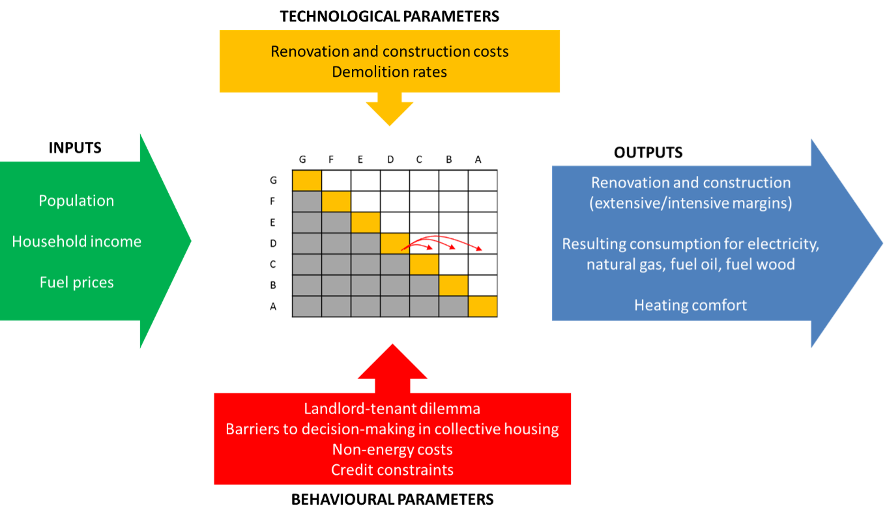
Previous developments¶
The development of Res-IRF has produced six peer-reviewed articles to this day, of which an overview is provided in Table 1.
Overview of achievements with Res-IRF
Version |
Main additions to preceding version |
Main data source |
Peer-reviewed publications |
Approach |
Main results |
|---|---|---|---|---|---|
1 |
ANAH (2008) |
Giraudet et al., Energy Journal, 2011 |
Policy analysis |
Policy portfolio considered (energy efficiency subsidies, carbon tax, building codes) does not permit attainment of sectoral energy saving targets |
|
1 |
ANAH (2008) |
Giraudet et al., Energy Economics, 2012* |
Sensitivity analysis |
Business as usual reduction in energy use of 37% to 2050, with an additional 21% if barriers to energy efficiency are removed |
|
1 |
ANAH (2008) |
Mathy et al., Energy Policy, 2015 |
Policy analysis |
Carbon dioxide emission reductions of 58% to 81% by 2050 |
|
2 |
Updating of retrofit costs and heating intensity parameters; introduction of fuel wood and social housing. |
ANAH (2008) |
Branger et al., Environmental Modelling & Software, 2015* |
Sensitivity analysis |
Monte Carlo simulations point to 13% overall uncertainty in model outputs. Morris method of elementary effects identifies energy prices as the most influential variable. |
3 |
Comprehensive updating of model parameters; calibration on base year 2012 ; disaggregation of households by income categories. |
Phébus (2013) |
Giraudet et al., working paper, 2018 |
Policy analysis |
Policy interactions imply a 10% variation in policy effectiveness |
Phébus (2013) |
Bourgeois et al., ECEEE proceedings, 2019 |
Policy analysis |
Carbon tax generates more environmental, social and economic benefits when its revenue is recycled as energy efficiency subsidies than as a lump-sum transfer |
||
3.1 |
Calibration of version 3.0 on base year 1984 (instead of 2012). |
CEREN archives |
Glotin et al., Energy Economics, 2019* |
Backtesting |
Model reproduces past energy consumption with an average percentage error of 1.5%. Analysis reveals inaccuracies in fuel switch due to off-model, politically-driven processes |
Note : The symbol * points to the reference that contains the most comprehensive description of the associated version of the model. The most comprehensive description of version 3.0 is to be found in the present document.
Specification of Version 3.0¶
The model is calibrated on base year 2012. What we refer to as existing dwellings corresponds to the stock of dwellings available in 2012, minus annual destructions. What we refer to as new dwellings is the cumulative sum of dwellings constructed after 2012.
Data used in version 3.0¶
Previous versions of Res-IRF were parameterized on data published in 2008 by the Agence nationale de l’habitat (ANAH, 2008). A major step forward for the time, this database aggregated data of varying quality from different sources. A number of extrapolations made up for missing (e.g., the number of dwellings built before 1975) or imprecise (e.g., occupancy status of decision-makers) data.
The version 3.0 of the model is now mainly based on data from the Phébus survey (Performance de l’Habitat, Équipements, Besoins et USages de l’énergie ). Published in 2014, the Phébus data represented a substantial improvement in knowledge of the housing stock and its occupants. Specifically, a more systematic data collection procedure allowed for new information (in particular on household income) and improved accuracy of previously available information. These advances now permit assessment of the distributional aspects of residential energy consumption.
The Phébus survey has two components:
The so-called “Clode” sample details the characteristics of dwellings, their occupants and their energy expenditure. Specific weights are assigned to each household type to ensure that the sample is representative of the French population.
The so-called “EPC” sample complements, for a subsample of 44% of households in the Clode sample, socio-economic data with certain physical data, including the energy consumption predicted by the EPC label. In Res-IRF, specific weights are assigned to this sub-sample, based on Denjean (2014).
To parameterize the model, we matched the two components in a single database. Without further specification, the matched database is the one we refer to when we mention Phébus in the text.
In addition to the Phébus data, we calibrate correction parameters so that the model outputs at the initial year are consistent with the data produced by the Centre d’études et de recherches économiques sur l’énergie (CEREN). The CEREN data differ from the Phébus ones in their scope and the methodology used to produce them. They however serve as a reference for most projections of energy consumption in France.
Overview of the database
Phébus-Clode |
Phébus-DPE |
CEREN |
|
|---|---|---|---|
Data source |
In-home survey including over 500 questions and energy bills. |
EPC audit realized among voluntary households that participated in the Clode survey |
Census data supplemented by household and retrofit contractor surveys. |
Sample size |
5,405 dwellings |
2,389 dwellings (from the 5,405 of the Clode sample) |
3,000 (2,000 in existing dwellings and 800 in new ones) |
Stakeholders |
Management : SoeS, Veritas pour DPE, Ipsos pour Clode. Funding : EDF, Total, Leclerc, ANAH, ADEME. |
CEREN |
Overview of the content of the databases
Phébus-Clode |
Phébus-DPE |
CEREN |
|
|---|---|---|---|
Surface of the dwelling |
Available |
Available |
Not available |
Year of construction |
Available |
Available |
Not available |
Occupancy status |
Owner-occupiers, landlords and social housing |
Owner-occupiers and landlords |
Owner-occupiers and landlords |
Type of dwelling |
Single- and multi-family |
Single- and multi-family |
Single- and multi-family |
Scope |
Main residences in metropolitan France, detailed by climatic zones |
Main residences in metropolitan France, detailed by departements |
Main residences in metropolitan France |
Income |
Available for occupants |
Not available |
Not available |
Energy consumption |
Actual, adjusted from energy bills |
Conventional, as predicted by the EPC label |
Actual, from measurement and estimation |
Building stock¶
The model contains 1,080 types of dwellings divided into:
Nine energy performance levels – EPC labels A to G for existing dwellings, Low Energy Building (LE) and Net Zero Energy Building (NZ) levels for new dwellings (see corresponding energy use in Table 6);
Four main heating fuels – electricity, natural gas, fuel oil and fuel wood
Six types of investors – owner-occupiers, landlords or social housing managers, each in single- and multi-family dwellings;
Five categories of household income, the boundaries of which are aligned with those of INSEE quintiles.
Scope¶
Res-IRF 3.0 covers 23.9 million principal residences in metropolitan France among the 27.1 million covered by the Phébus-Clode survey for the year 2012. This scope differs from that of other databases (see Figure 2). It was delineated by excluding from the Phébus sample: those dwellings heated with fuels with low market shares, such as liquefied petroleum gas (LPG) and district heating; some dwellings for which it was not possible to identify a principal energy carrier; some dwellings for which the Phébus data were missing.
Comparison of dwelling counts across databases 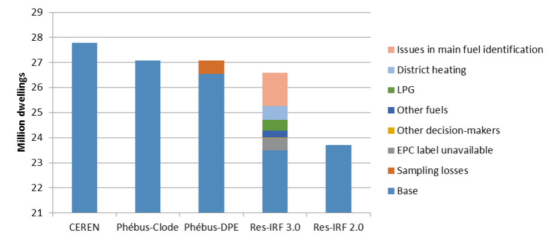
Energy performance¶
The number of dwellings in each EPC band is directly given by Phébus-DPE. Figure 3 compares the distribution of EPC labels in versions 2.0 and 3.0 of the model. The stock in the latter is less energy efficient in year 2012 than was that of the former in year 2008, with more dwellings in lower EPC bands (G-E) and fewer in upper bands (D-A).
Distribution of EPC labels in Res-IRF, version 3.0 (based on Phébus data) and 2.0 (based on ANAH data) 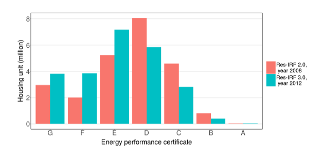
Building characteristics and occupancy status¶
Table 4 specifies the joint distribution of building characteristics (singe- and multi-family dwellings) and types of investors (owner-occupied, landlord, social housing manager). Figure 4 shows that this distribution does not substantially differ from that previously used. Note that, although the Phébus database makes it possible to separate single- and multi-family dwellings within social housing stock, the two categories are collapsed in the figure to facilitate comparison.
Joint distribution of building and investor characteristics in Res-IRF 3.0
Occupancy status / Housing type |
Single-family |
Multi-family |
Total |
|---|---|---|---|
Owner-occupier |
49.0% |
11.9% |
60.9% |
Landlord |
8.8% |
15.6% |
24.4% |
Social housing manager |
3.2% |
11.5% |
14.7% |
Total |
61.0% |
39.0% |
100.0% |
Dwelling count by building and owner characteristics, version 3.0 (based on Phébus data) et 2.0 (based on ANAH data)
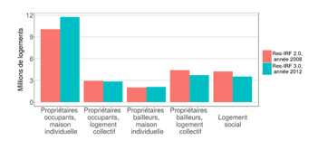
Heating fuel¶
The model covers energy use for heating from electricity, natural gas, fuel oil and fuel wood. This cope covers 16% of final energy consumption in France. We consider only the main heating fuel used in each dwelling. To identify it from the Phébus-Clode database, we proceed as follows:
We retain the main heating fuel when declared as such by the respondents.
When several main fuels are declared, we assign to the dwelling a heating fuel according to the following order of priority: district heating > collective boiler > individual boiler > all-electric > heat pump > other.
When no main fuel is reported, we retain the main fuel declared as auxiliary, determined with the following order of priority: electric heater > all-electric > mixed base > fixed non-electric > chimney.
Energy consumption in Phébus
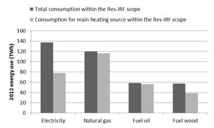
Figure 5 compares the total consumption of each fuel in the Phébus database and in the model. It shows that retaining only one fuel for each dwelling leads us to consider much less electricity and wood consumption than reported in Phébus. This is due for the most part to our exclusion of auxiliary heating, which predominantly uses electricity and wood, and to a lesser extent to our exclusion of the specific electricity consumption that is reported in Phébus.
Household income¶
A major advance of version 3.0, the introduction of income categories was intended to capture heterogeneity in (i) the propensity of owners to invest in energy retrofits and (ii) the intensity of use of heating infrastructure by occupants. The level of detail of the Phébus database made this development possible. Yet since the income data it contains only relates to occupants, additional data were needed to set income parameters for landlords.
Occupant¶
The disposable income of occupants – owner-occupiers and tenants – is segmented into five categories delineated by the same income boundaries as those defining income quintiles in France, according to the national statistical office for 2012. The use of these quintiles instead of those intrinsic in the Phébus sample ensures consistency between homeowners’ and tenants’ income (see next section), without introducing too strong biases, as shown in Table 5. Each dwelling is then allocated the average income for its category. Figure 6 illustrates the distribution of occupant income in the different EPC bands. A clear correlation appears between household income and the energy efficiency of their dwelling.1
Distribution of income categories within EPC bands (Source: Phébus)
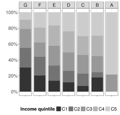
Income categories used in Res-IRF 3.0
Category |
Boundaries of Insee quintiles (€) |
Share of total households in Res-IRF |
|---|---|---|
C1 |
0 – 16,830 |
17% |
C2 |
16,831 – 24,470 |
19% |
C3 |
24,471 – 34,210 |
23% |
C4 |
34,211 – 48,680 |
22% |
C5 |
> 48,681 |
19% |
Owners¶
Homeowners’ income overlaps with occupants’. Yet Phébus does not contain any information on the income of landlords, which we had to reconstitute by other means. We matched the Phébus-DPE data with INSEE data pre-processed by the Agence nationale pour l’information sur le logement (ANIL, 2012). The resulting landlords’ income distribution is described in Figure 7 and compared to that of tenants. Here again, significant disparities appear, with households whose annual income falls below €34,210 representing 80% of tenants but only 20% of owner-occupiers.
Distribution of income categories for landlords and tenants in privately rented housing
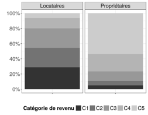
To build this figure, some adjustments are needed to translate into income categories the ANIL (2012) data that are expressed in terms of living standard1:
Income deciles are first grouped into quintiles (row vector A) ;
Living standard quintiles are then converted into income quintiles (row vector C) owing to matrix B, specified with data from the Budget des familles survey for household enjoying non-zero rents;
The transpose of vector C is mutiplied by row vector D that describes the share of rented dwelling by EPC band in Phébus ;
The resulting matrix E is mutiplied by matrix F describing the share of rented dwellings by heating fuel in Phébus, which produces hypermatrix G.
Matrices A to F are detailed below. The income assigned to each landlord corresponds to the average of its category.
Matrix A : Distribution of living standard categories. Source : ANIL
Living standard |
Share of households |
|---|---|
S1 |
4.7% |
S2 |
5.8% |
S3 |
11.2% |
S4 |
17.3% |
S5 |
61.0% |
Matrix B : Correspondance between income and living standard. Source : Budget des familles, Insee
Income level / Living standard |
S1 |
S2 |
S3 |
S4 |
S5 |
|---|---|---|---|---|---|
C1 |
0.67 |
0.3 |
0 |
0 |
0 |
C2 |
0.18 |
0.22 |
0.19 |
0.09 |
0 |
C3 |
0.11 |
0.26 |
0.37 |
0.21 |
0.05 |
C4 |
0.04 |
0.21 |
0.33 |
0.49 |
0.15 |
C5 |
0 |
0 |
0.12 |
0.21 |
0.8 |
Matrix C : Distribution of income categories (product of matrices A and B)
Income category |
Share of households |
|---|---|
C1 |
4.92% |
C2 |
5.76% |
C3 |
12.70% |
C4 |
22.99% |
C5 |
53.63% |
Matrix D : Distribution of EPC bands. Source : Phébus
EPC Band |
Share of households |
|---|---|
G |
27.4% |
F |
21.2% |
E |
29.2% |
D |
14.5% |
C |
7.0% |
B |
0.7% |
A |
0.0% |
Matrix E : Share of EPC band by income level (Matrix C x Matrix D)
Income level/EPC band |
G |
F |
E |
D |
C |
B |
A |
|---|---|---|---|---|---|---|---|
C1 |
78,624 |
60,781 |
83,778 |
41,648 |
20,130 |
2,021 |
0 |
C2 |
92,040 |
71,153 |
98,074 |
48,755 |
23,565 |
2,366 |
0 |
C3 |
203,100 |
157,009 |
216,414 |
107,584 |
52,001 |
5,220 |
0 |
C4 |
367,655 |
284,220 |
391,756 |
194,750 |
94,132 |
9,449 |
0 |
C5 |
857,593 |
662,973 |
913,811 |
454,275 |
219,573 |
22,041 |
0 |
Share of households by fuel type and decision-maker status
Housing type |
Heating fuel |
G |
F |
E |
D |
C |
B |
A |
|---|---|---|---|---|---|---|---|---|
Single-family |
Electricity |
15.80% |
15.40% |
13.65% |
12.81% |
5.44% |
0.00% |
0.00% |
Natural gas |
5.00% |
5.08% |
12.26% |
8.69% |
37.70% |
36.04% |
0.00% |
|
Fuel oil |
9.30% |
12.39% |
8.98% |
5.85% |
3.06% |
0.00% |
0.00% |
|
Fuel wood |
3.73% |
2.38% |
2.57% |
6.06% |
0.00% |
0.00% |
0.00% |
|
Multi-family |
Electricity |
53.94% |
40.06% |
41.80% |
36.54% |
24.65% |
0.00% |
0.00% |
Natural gas |
7.73% |
12.88% |
19.52% |
28.41% |
27.22% |
63.96 |
0.00% |
|
Fuel oil |
3.31% |
7.99% |
1.21% |
1.64% |
1.95% |
0.00% |
0.00% |
|
Fuel wood |
1.18% |
3.83% |
0.00% |
0.00% |
0.00% |
0.00% |
0.00% |
Specification of Version 4.0¶
Data used in version 4.0¶
As explained in the previous section, the core of Res-IRF is a stock matrix that describes the structure of the residential stock at an original year. Until recently, the model was based on the image of the residential stock derived from the 2012 Phébus survey data. This is what will be called the 2012 version of Res-IRF.
For greater accuracy of the model projections, a new stock matrix corresponding to the image of the residential stock in 2018 was imported. This matrix was built up using data provided by the SDES as part of the research agreement between the CGDD and the CIRED in which this work is included.
Another dataset was also provided to us concerning the correspondence between the incomes of landlords and those of tenants in the private rental stock.
These two data sets are described in the following sections. They have been constituted by the SDES from data coming from the Fidéli 2018 database, from the DPE 2017 and 2018 database of the ADEME and from the Enerter model of the company Energies Demain for the dwellings built before 1948 (2).
Building stock¶
The first dataset incorporated into Res-IRF is the new stock matrix (MAT1) representing the residential stock in 2018. It describes the number of units in the residential stock by various segments.
This matrix segments the 28.6 million dwellings in the residential stock (primary residences only) into five categories:
Energy performance level: DPE label ranging from G to A;
Type of housing: individual or collective;
Type of owner: owner-occupier, owner-lessor, social housing, free rental housing;
Income level of the owner: income deciles of the tenant;
Heating energy: natural gas, electricity, “other energy”.
These data had to be reprocessed before they could be imported into Res-IRF. The following changes were made:
Deletion of housing rented free of charge: this category, present in the data provided, is not relevant in Res-IRF and represents a limited number of people;
Conversion of owner deciles to owner quintiles: As Res-IRF is currently adapted to handle only income quintiles and not deciles, the numbers of deciles belonging to the same quintile have been grouped together;
Treatment of heating energy data: the only energy categories available in the data received were natural gas, electricity and the “other energies” category. However, Res-IRF includes four types of energy: electricity, gas, but also homes heated with oil and wood. It was therefore necessary to determine the share of fuel oil and wood in the “other energy” category. For this purpose, other data on the structure of the stock in 2018 from CEREN were used (37). For each type of dwelling (single-family or multi-family), these data make it possible to obtain the percentage of dwellings heated with wood and fuel oil among those heated neither with electricity nor with gas. The assumptions used are presented in the following table.
Proportion of dwellings heated with wood and oil among dwellings not heated with gas or electricity, by type of dwelling
Wood fuel |
Oil fuel |
|
|---|---|---|
Multi-family |
27% |
30,8% |
Single-family |
25,9% |
6,2% |
Note for the reader: among collective dwellings that are heated neither by gas nor by electricity, 27% are heated by wood and 30.8% are heated by oil.
Shift from tenant income to owner income: the income levels expressed in the stock matrix provided by the SDES were initially those of tenants. However, for Res-IRF to function properly, it is necessary to start by importing into the model the numbers of private rental housing stock according to the incomes of owners, as explained in section 2.2.4. It was therefore necessary to match the incomes of tenants with the incomes of owners in the private rental housing stock by means of a pass-through matrix.
Scope¶
This new structure is compared to the old version of Res-IRF, calibrated from the 2012 Phebus data. We look at both the original 2012 fleet matrix and the projection that this 2012 calibrated version gives for the year 2018. For the analysis of the results that follows, it is important to keep in mind that we are not comparing staff of identical size.
Indeed, the stock matrix used in 2012 had to be truncated even more than the one used in 2018 to be usable in Res-IRF: it indicated a residential stock of 23.9 million dwellings in 2012 and the projection for 2018 reaches 25.5 million dwellings. In comparison, the new data show a stock of 26.7 million dwellings in 2018.
Comparison Phebus-2012 building stocks and SDES-2018 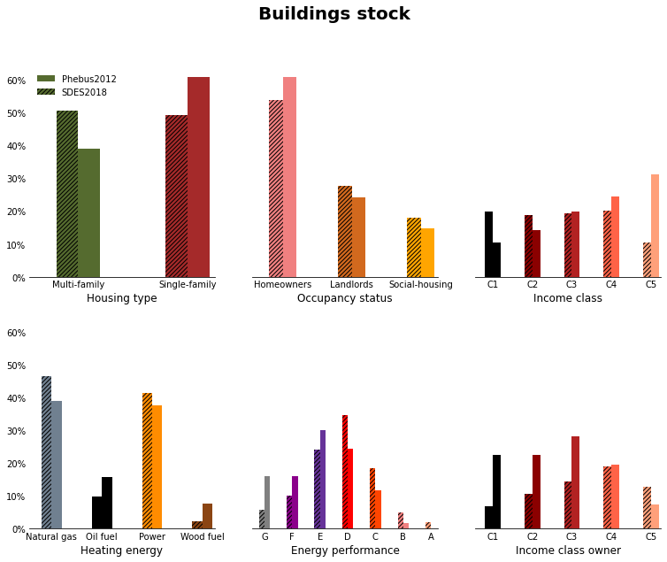
Note:
SDES building stock got a decile segmentation for income class. We aggregate them in figures in order to make the comparison possible.
All images come from comparison.iynb a Jupyter notebook available in the project.
Energy performance¶
The number of dwellings in each EPC band is directly given by Phébus-DPE and SDES database. Figure compares the distribution of EPC labels in versions 3.0 and 4.0 of the model. The stock in the latter is more energy efficient in year 2018 than was that of the former in year 2012, with less dwellings in lower EPC bands (G-E) and more in upper bands (D-A).
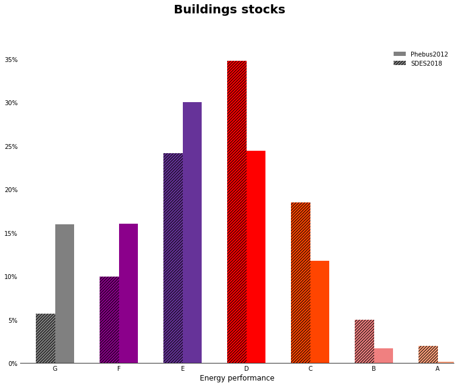
Heating Energy¶
The model covers energy use for heating from electricity, natural gas, fuel oil and fuel wood. This cope covers 16% of final energy consumption in France.3 We consider only the main heating fuel used in each dwelling.
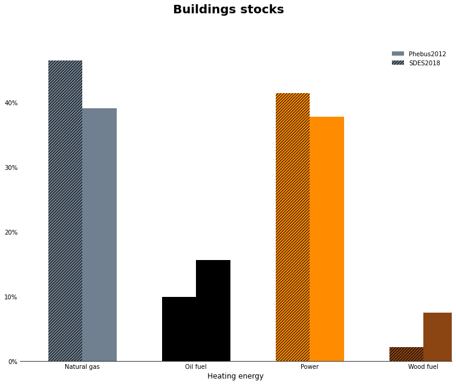
Household income¶
Renovation rate¶
In Res-IRF 3.0, the renovation rates used to calibrate Res-IRF were differentiated by decision maker and by ECD label.
Due to the lack of robustness of the data on renovation rates by EPC and the problematic results they generated with the new image of the stock (SDES 2018), the renovation rates are now only differentiated by decision-makers. The latter have been recalculated from data already used in the old parameterization of the renovation rates but also with other additional data sources.
The 2012 version of Res-IRF (calibrated on Phébus) replicated the renovation rates observed in the French housing stock according to the DPE and the decision maker of a dwelling. This meant using a matrix of 6 * 6 = 36 renovation rates, which the calibration of parameters of the model (rho parameters of the renovation rate function) should make it possible to replicate in the original year.
Energy use¶
The model uses two metrics for energy use: the conventional consumption predicted by the EPC label of the dwelling; and the actual consumption that determines energy expenditure. The two are linked by the intensity of heating of the heating infrastructure, which is an endogenous function of the model.
Conventional energy use¶
Integrating new data on specific consumption (kWh/m²/year) and housing surface area (m²) allowed us to improve the accuracy of total consumption parameters (kWh/year).
Specific consumption¶
The conventional specfic consumption of an existing dwelling is directly given by its EPC label1. In Res-IRF 2.0, each label was assigned an energy consumption equal to the middle of EPC band. By including a precise measurement of the conventional energy consumption of each dwelling, the Phébus-DPE database made it possible to estimate for each band an average consumption. The resulting values are those used in version 3.0; they compared to the previous ones in Figure 8.
1 : Final energy consumption is deducted from primary energy consumption by a coefficient of 1 for natural gas, heating oil and wood energy and by the conventional coefficient of 1/2.58 that applies to electricity in France.
Descriptive statistics of energy consumption by EPC bands in Phébus (vertical axis in log scale) 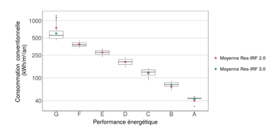
Since the EPC covers energy consumption for heating, hot water and air conditioning, adjustments are needed to isolate the part specifically dedicated to heating. In Res-IRF 2.0, this part was set to 0.8, based on CEREN data. Here again, the Phébus-DPE database, by distinguishing energy between heating use, hot water use and photovoltaic production, makes it possible to estimate an average share dedicated to heating for each EPC band.
Conventional primary energy consumption
EPC band |
Average consumption (kWh/m²/year) |
Share dedicated to heating |
Average consumption for heating in Res-IRF (kWh/m²/an) |
|---|---|---|---|
G |
596 |
0.85 |
507 |
F |
392 |
0.82 |
321 |
E |
280 |
0.77 |
216 |
D |
191 |
0.74 |
141 |
C |
125 |
0.72 |
90 |
B |
76 |
0.77 |
59 |
A |
40 |
1.12 |
45 |
LE |
50 |
0.40 |
20 |
NZ |
40 |
0.40 |
16 |
New dwellings fall into two categories of energy performance: Low Energy (LE) level, aligned with the prevailing building code at 50 kWh/m²/year of primary energy, and Net Zero Energy (NZ) level, mandating zero consumption, net of production from renewable sources. Since we focus on gross energy consumption, we assign a consumption of 40 kWhEP/m²/year to NZ dwellings. The same coefficient of 0.4 is applied to BBC and BEPOS consumption in order to isolate heating from the five usages covered by building code prescriptions (instead of three usages in the case of the EPC in existing dwellings). Note that the energy requirements of EPC band A are also net of production from renewable sources. Our focus on gross consumption leads us to apply a coefficient that is greater than 1. These calculations are detailed in Table 6.
Surface area¶
The same approach was used to re-set surface area parameters bases on average values estimated on Phébus data, by category of dwelling. Descriptive statistics are provided in Figure 9 and compared to the values used in version 2.0.
Surface area, by category of dwelling 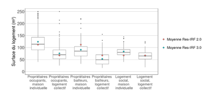
Actual energy use¶
A growing number of academic studies point to a gap between the conventional energy consumption predicted by energy performance certificates and actual energy consumption. The most common explanation is a more intense heating of the heating infrastructure after an energy efficiency improvement – a phenomenon commonly referred to as the “rebound effect.” 4
In versions 1.0 and 2.0, the intensity of use was determined by conventional heating expenditure, based on work carried out by EDF R&D (Allibe, 2015)5. It therefore depended on two variables: the energy performance of the dwelling, measured by its EPC label, and the price of energy. In version 3.0, we included a third variable: household income. This development was made possible by several improvements in the data available, including the Phébus database and additional work by EDF R&D (Cayla and Osso, 2013), which now connects heating intensity to the income share devoted to heating, i.e. conventional expenditure as a percentage of income.
Heating intensity in Res-IRF now follows the following equation: $\( Heating Intensity=-0,191*log(Income Share)+0,1105 \)$
with: $\( Heating Intensity= (Actual energy use)/(Conventional energy use) \)$
and: $\( Income Share=(Energy price*Surface*Conventional energy use)/Income \)$
Heating intensity in the current and previous versions of Res-IRF 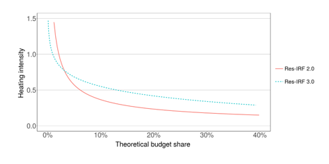
Figure 10 compares the relationship used in Res-IRF version 3.0 with that used in version 2.0, based on an average surface area of 85m² and an average annual income of €30,000. The new relationship is less steep, reflecting a compensating effect of income on energy prices (both leading to a leftward shift on the horizontal axis). With this new formula, the aggregate heating intensity in Res-IRF is now 0.74 at the initial year, instead of 0.55 in the previous version.
Total energy use¶
The total final actual energy consumption generated by Res-IRF from the Phébus data for the initial year differs from the values produced by CEREN. As mentioned above (see Figures 2 and 5), these differences are due to differing scopes between the Phébus and CEREN databases and to the adjustments needed to select the main heating fuel (see Section 2.1.4) .
To ensure consistency with the CEREN data, which is the reference commonly used in modelling exercises, Res-IRF is calibrated to reproduce the final energy consumption given by CEREN for each fuel in 2012. The resulting conversion coefficients are listed in Table 7. They indicate that Res-IRF reproduces natural gas and heating oil consumption fairly accurately, with an error of around 5%. On the other hand, electricity consumption is clearly overestimated and fuel-wood consumption is greatly underestimated. The succinct documentation of the CEREN database did not allow us to clearly identify the reasons for these biases. However, it can reasonably be assumed that they are attributable to the procedure for selecting a main heating fuel in Res-IRF, which probably implies some substitution of electricity for wood in dwellings that are mainly heated with electricity but use wood as auxiliary heating. The difficulties inherent in converting different forms of wood (logs, pellets, etc.) into TWh can also explain the differences observed in wood consumption.
Electricity |
Natural gas |
Fuel oil |
Fuel wood |
TOTAL |
|
|---|---|---|---|---|---|
CEREN values to be reproduced in 2012 (TWhEF) |
44.4 |
119.7 |
55.5 |
73.3 |
292.9 |
Correction factor applied to Res-IRF |
0.79 |
1.06 |
1.03 |
2.14 |
1.14 |
Energy efficiency improvements¶
Stock dynamics¶
The number of dwellings and their surface area are determined each year in Res-IRF by exogenous projections of population and aggregate household income projection. The former is based on INSEE (2006); in the absence of an authoritative scenario, the latter is based on a growth assumption of 1.2%/year, which extrapolates the trend given by INSEE for the period 2009-20136. Based on the annual needs thus determined, the total housing stock is divided into two components:
The stock of “existing dwellings” corresponds to the total stock of the initial year. It is eroded at a rate of 0.35%/year due to destruction, based on Allaire et al. (2008). Destructions are assumed to affect in priority the lowest energy performance labels, based on Traisnel (2001).
New constructions are calculated so as to meet housing needs, determined by total projected housing needs net of the existing stock. The cumulative sum of new constructions since the initial year constitutes the stock of “new dwellings.”
This specification produces a flow of new constructions of 365,000 in 2013, 357,000 in 2014 and 348,000 in 2015, similar to the average of 374,000 given by INSEE (2018) over a slightly wider area including the French overseas departments and territories, except Mayotte.
In Res-IRF 2.0, the share of single- and multi-family dwellings was held constant in both existing and new housing stocks, but at different levels; it therefore evolved in the total stock by a simple composition effect. These dynamics are now more precisely parameterized in Res-IRF 3.0 thanks to recent empirical work linking the increase in the share of multi-family housing in the total stock to the rate of growth of the total stock housing growth (Fisch et al., 2015) ( Figure 11). This relationship in particular reflects urbanization effects. The share of owner-occupied and rented dwellings is held constant.
Investment decisions – general case¶
The energy performance of the housing stock in Res-IRF is affected by both the construction of new dwellings and the
renovation of existing ones. Both effects are modelled by discrete choice functions. Generally speaking, the owner of a
dwelling of initial performance i∈{1…n} chooses to upgrade it to an option of final performance f∈{i+1,…,n} by comparing
its life-cycle cost to that of other options. The life-cycle cost \(LCC_{i,f}\) of an option is the sum of three terms:
$\(LCC_{i,f}= INV_{i,f}+ γ * ENER_f + IC_{i,f}\)$
where INV is the investment cost; ENER is the life-cycle discounted cost of conventional energy use, calculated using the energy price for the year under consideration; IC are some “intangible costs,” representing non-energy attributes of the investment, such as aesthetic or acoustic benefits, inconvenience generated by insulation works, etc..
The assumption of myopic expectation, which materializes by applying the discount factor to the contemporaneous energy price, is justified by a number of econometric studies (e.g., Anderson et al., 2013). The discount factor γ depends on the discount rate r and the investment horizon l according to the following relationship:
The two parameters are set in Res-IRF so as to capture various barriers to home renovation:
The discount rate captures both the tighter credit constraints facing lower-income households and the barriers to decision-making within homeowner associations.
The investment horizon reflects the intensity with which real estate and rental markets capitalize the “green value” of the housing, i.e., magnitude of the rental or resale premium for a property that has just undergone energy efficiency improvements.
The market share \(MS_{i,f}\) of upgrades from labels i to f, resulting from the aggregation of individual choices, is determined by their life-cycle cost from the following equation:
Parameter v characterizing the heterogeneity of preferences is set to 8 in the model.7 Intangible costs are calibrated so that the observed market shares are reproduced in the initial year.
The paragraphs thereafter describe in detail the specification of energy efficiency improvements, which are based on two types of technical data – the market shares of the different options in the initial year and their investment cost – and two types of behavioural data – the discount rate and the investment horizon.
New constructions¶
Construction costs at the LE and NZ levels have been updated in Res-IRF 3.0 based on estimates recently made available by CGDD (2015) 8
Single-family dwellings |
Single-family dwellings |
Multi-family dwellings |
Multi-family dwellings |
|
|---|---|---|---|---|
Low Energy |
Net Zero Energy |
Low Energy |
Net Zero Energy |
|
112 |
1 199 |
1 308 |
Natural gas |
|
1 094 |
1 121 |
1 323 |
1 350 |
The market shares used to calibrate intangible costs were also updated, based on trends provided by CEREN (Figure 12).
The massive penetration of natural gas at the expense of electric heating observed over the past ten years in multi-family housing is mainly due to the anticipation and subsequent application of the 2012 building code. In order to abstract from short-term variations, the 2012 market shares are set in Res-IRF on the average of the years 2012-2015 ( Table 9).
Electricity |
Natural gas |
Fuel oil |
Fuel wood |
Total |
|
|---|---|---|---|---|---|
Single-family dwellings |
75.3% |
18.5% |
0.5% |
5.8% |
100% |
Multi-family dwellings |
19.5% |
79.5% |
0.0% |
1.0% |
100% |
Considering that the quality of new constructions results from decisions made by building and real estate professionals rather than by future owners, we subject these decisions in the model to private investment criteria, reflected by a discount rate of 7% and a time horizon of 35 years.
Renovation of existing dwellings¶
The model simultaneously determines the number of renovations and their performance. The process is therefore more complex than in new construction, where the two margins are distinct. For the sake of clarity, we hereafter describe them sequentially.
Intensive margin¶
Renovation costs \(INV_{i,f}\) are described by an upper diagonal matrix linking the initial EPC label i of the dwelling to its final label f (Table 10). Parameterization of the matrix is based on piecemeal data supplemented with values interpolated according to the following principles:
Decreasing returns, i.e., increasing incremental cost of renovation: \(INV_{i,f+2}-INV_{i,f+1} > INV_{i,f+1} - INV_ {i,f}\).
Economies of scale, i.e., deep retrofits costing less than a succession of incremental renovations: \(INV_{i,f} < INV_ {i,i+k} + INV_{i+k,f}\) for all k such that \(1≤k<f-i\).
Renovation costs (€/m²)
Initial / Final label |
F |
E |
D |
C |
B |
A |
|---|---|---|---|---|---|---|
G |
76 |
136 |
201 |
271 |
351 |
442 |
F |
63 |
130 |
204 |
287 |
382 |
|
E |
70 |
146 |
232 |
331 |
||
D |
79 |
169 |
271 |
|||
C |
93 |
199 |
||||
B |
110 |
The matrix equally applies to single- and multi-family dwellings, in both private and social housing. In the absence of any substantial improvement in the quality of the data available, the matrix remains unchanged from version 2.0 of the model. The same is true for the matrix of market shares used to calibrate intangible costs of renovation, which was based on PUCA data (2015, p.4) (Table 11).
Initial market shares of energy efficiency upgrades
Energy performance |
F |
E |
D |
C |
B |
A |
|---|---|---|---|---|---|---|
G |
25.00% |
27.00% |
27.00% |
20.98% |
0.01% |
0.01% |
F |
40.40% |
26.30% |
31.30% |
1.99% |
0.01% |
|
E |
66.00% |
28.00% |
5.99% |
0.01% |
||
D |
95.00% |
4.99% |
0.01% |
|||
C |
90.91% |
9.09% |
||||
B |
100% |
The costs reported in Table 10, weighted by the market shares reported in Tables 11 and 13, result in an average renovation cost of 112 €/m², very close to the 110 €/m² value given by OPEN (9 978 € of average expenditure compared to 91 m²). Compared to the cumulative energy savings they generate (assuming an average lifetime of 26 years), they correspond to an average “negawatt-hour cost” of 83 €/MWh, with extreme values of 25 and 446. These values are in line with those recently produced by DG Tresor (2017, Table 1).
Intangible costs are calibrated so that the life-cycle cost model, fed with the investment costs reported in Table 10, matches the market shares reported in Table 11. The resulting intangible costs are reported in Table 12.
Averaged intangible costs (€/m²)
F |
E |
D |
C |
B |
A |
||
|---|---|---|---|---|---|---|---|
G |
32 |
32 |
51 |
56 |
128 |
149 |
|
F |
20 |
43 |
36 |
86 |
125 |
||
E |
27 |
33 |
48 |
106 |
|||
D |
18 |
46 |
74 |
||||
C |
46 |
36 |
|||||
B |
0 |
Extensive margins¶
An upgrade an initial label i is determined by its net present value (NPV), calculated as the sum of the life-cycle cost of the different options f∈{i+1,…,n}, weighted by their market share: $\(NPV_i=∑_{f>i}^n MS_{i,f} * LCC_{i,f}\)\( The renovation rate \)τ_i\( of dwellings labelled i is then calculated as a logistic function of the NPV: \)\(τ_i=τ_{max}/(1+(τ_{max}/τ_{min} -1) e^{-ρ(NPV_i- NPV_{min})} )\)$
with \(τ_{min}=0,001%\), \(NPV_{min}=-1 000€\) and \(τ_{max}=20%\). The logistic form captures heterogeneity in heating preference and habits, assuming they are normally distributed9. Parameter ρ is calibrated, for each type of decision-maker and each initial label (i.e., 6x6=36 values), so that the NPVs calculated with the subsidies in effect in 2012 (see main article) reproduce the renovation rates described in Tables 13 and 14 and their aggregation represents 3% (686,757 units) of the housing stock of the initial year.
Renovation rate by energy performance label. Source: PUCA (2015)
Initial label |
Contribution to the aggregate renovation rate |
|---|---|
G |
36% |
F |
30% |
E |
15% |
D |
10% |
C |
8% |
B |
1% |
Total |
100% |
Renovation rate by type of dwelling. Source : OPEN (2016) and USH (2017)
Type of decision-maker |
Type of dwelling |
Renovation rate |
|---|---|---|
Owner-occupied |
Single-family |
4.7% |
Multi-family |
3.6% |
|
Privately rented |
Single-family |
2.0% |
Multi-family |
1.8% |
|
Social housing |
Single-family |
1.5% |
Multi-family |
2.0% |
Behavioural parameters¶
In private housing, discount rates are differentiated by housing type in order to capture the heterogeneous constraints faced by investors (Table 15). Specifically, the discount rates decrease with the owner’s income so as to reflect tighter credit constraints faced by lower-income households. Discount rates are also higher in multi-family housing than in single-family homes to capture the difficulties associated with decision-making within homeowner associations. In social housing, on the other hand, the discount rate is set at 4%, the value commonly used in public decision-making.
Discount rates
Income category |
Single-family housing |
Multi-family housing |
Social housing |
|---|---|---|---|
C1 |
15% |
37% |
4% |
C2 |
10% |
25% |
4% |
C3 |
7% |
15% |
4% |
C4 |
5% |
7% |
4% |
C5 |
4% |
5% |
4% |
Average rate, weighted by the shares of Table 4 |
8% |
17% |
4% |
The investment horizon is subject to different scenario variants, reflecting different intensities of market capitalization of energy savings (see Table 16):
In the ‘full capitalization’ scenario, the investment horizon corresponds to the entire lifetime of energy retrofits, i.e., 30 years for improvements on the envelope and 16 years for the improvements on heating systems. Investors enjoy the benefits of the investment as long as they own the property (possibly in the form of higher rents); upon reselling, they receive a premium equal to the discounted sum of the residual monetary savings generated by the investment.
The reference scenario corresponds to a situation where the horizon of landlords is reduced to three years, the average term of a lease. This assumption reflects an inability to increase rents in an attempt to recoup investment. This situation, often referred to as the “landlord-tenant dilemma,” is the most common in practice (Giraudet, 2018).
In the ‘no sale capitalization,’ the investment horizon is limited to seven years, equivalent to the average length of ownership of a property. This assumption totally ignores the residual benefits of the investment at the time of resale.
In the ‘no sale nor rent capitalization’ scenario, the owner-tenant dilemma adds to the lack of capitalization of the resale premium.
Investment horizon for improvements on the envelope (on heating systems)
Scenario |
Logement social |
Propriétaire occupant |
Propriétaire bailleur |
|---|---|---|---|
Full capitalization |
30 (16) years |
30 (16) years |
30 (16) years |
Reference |
30 (16) years |
30 (16) years |
3 years |
No capitalization at resale |
30 (16) years |
7 years |
7 years |
No capitalization in rents nor sales |
30 (16) years |
7 years |
3 years |
Endogenous technical change¶
In both new construction and renovation, the life-cycle costs of the various energy efficiency options decrease endogenously with their cumulative production. These mechanisms are calibrated as in the previous version of the model as follows:
Investment costs decrease exponentially with the cumulative sum of operations so as to capture the classical “learning-by-doing” process. The rate of cost reduction is set at 15% in new construction and 10% in renovation for a doubling of production. The lower value in the former case is motivated by the fact the renovation technologies tend to be more mature.
Intangible renovation costs decrease according to a logistic curve with the same cumulative production so as to capture peer effects and knowledge diffusion. The rate of decrease is set at 25% for a doubling of cumulative production.
In both cases, reductions in the life-cycle cost of an option increase its market share compared to that of alternative options.
Illustrative simulations¶
To sum up, model outputs are determined by three exogenous inputs: population, household income and energy prices. The first two inputs determine the number and size of new dwellings, which influence the “extensive” margin of investment. Energy prices impact the market shares of the different renovation and construction options, thus influencing the “intensive” margin of investment. Finally, household income and energy prices influence the intensity with which the heating system is used. We discuss below a few simulations meant to illustrate the influence of key variables and parameters. Note that, while the calibration of the model incorporates a number of energy efficiency policies detailed in Giraudet et al. (2018), for the sake of illustrating its core mechanisms these policies are removed from the model at the end of the calibration in the simulations presented here.
Input variables¶
The model is fed with input variables parameterized as follows:
Population growth 10: based on a projection from INSEE (2006) equivalent to an average annual growth rate of 0.3%/year over the period 2012-2050.
Growth in household income: extrapolates the average trend of 1.2%/year given by INSEE (see paragraph 2.3.1) uniformly across all income categories.
Energy prices: based on a scenario from ADEME using assumptions from the Directorate General for Energy and Climate (DGEC) and the European Commission (see Figure 15). The scenario used is equivalent to an average annual growth rate of fuel prices after tax of 1.42% for natural gas, 2.22% for fuel oil, 1.10% for electricity and 1.20% for fuel wood over the period. These lead to an average annual growth rate of the price index of 1.47%/year.
Sensitivity Analysis¶
The following section illustrates the influence of key model inputs and parameters on a range of model outputs.
Influence of input variables¶
The influence of technological progress, energy prices and aggregate household income is assessed by comparing the reference scenario to alternatives in which they are frozen one after the other (cf. Table 19). 11
Scenario specifications
The value of the parameters of the market share functions and the renovation rate function (intangible cost and rho parameters) are calibrated in the first year of modeling to replicate the renovation rates observed in the French housing stock.
Whatever the scenario run, calibration must be done with the same environement than the observation year. Policies that was there must be activated. Intangible cost does not depend on the scenario. If the following parameters didn’t change, intangible cost can be reused:
energy prices,
renovation costs,
discount rate,
investment horizon,
paramters of public policies.
Scenario |
Endogenous techological change |
Energy prices |
Revenu des ménages |
|---|---|---|---|
Reference |
Learning rate of 15% for new construction and 10% for renovation |
ADEME scenario |
Growth rate of 1,2% p.a. |
No technological change |
Frozen. Learning rates set to zero. |
||
No technological change, frozen price |
Frozen |
||
No technological change, frozen price and income |
Frozen |
- 2
The acronym Res-IRF stands for the Residential module of IMACLIM-R France. Also developed at CIRED, IMACLIM-R France is a general equilibrium model of the French economy (Sassi et al., 2010). The two models are linked in Giraudet et al. (2012) and Mathy et al. (2015). The linkage in these papers is ‘soft’ in that it only concerns energy markets: Res-IRF sends energy demand to IMACLIM-R France which in turn sends back updated energy prices.
- 1(1,2,3,4)
The low number of dwellings labelled A and B in Phébus makes income distribution statistics less accurate in these bands.
- 3
Residential buildings in France contribute 26% of total energy consumption, 67% of which is devoted to heating, 91% of which is covered by electricity, natural gas, heating oil and wood energy (ADEME, 2015).
- 4
See for example Aydin et al (2017). Another explanation sometimes put forward is the pre-bound effect, according to which consumption before renovation, from which energy savings are predicted, is overestimated ( Sunikka-Blank et al., 2012).
- 5
The relationaship was: \(intensity of use = 3.5309 *exp(-0.643 *log (conventional expenditure per m2))\)
- 6
Based on a gross disposable household income of €1,318.3 billion in 2012 (https://www.insee.fr/fr/statistiques/2569356?sommaire=2587886).
- 7
In the absence of data allowing a more precise estimate, this value is set in an ad hoc manner. Sensitivity analysis of the model has shown that this parameter only had a small influence on the simulated energy consumption ( Branger et al., 2015).
- 8
The study does not include information on housing heated with fuel oil or on multi-family homes heated with wood. The former are therefore assigned the costs of new buildings heated with natural gas, and the latter the costs of single-family homes heated with wood, to which we add the average additional cost of multi-family homes.
- 9
For a micro-founded justification of the logistic form, see Giraudet et al. (2018, Online Appendix, Figure A3).
- 10
The population is adjusted by a factor of 23.9/27.1 to take into account the difference in scope between Res-IRF and Phébus. The resulting average household size is 2.2 persons per dwelling in 2013, a value consistent with INSEE data (2017); it decreases with income to reach 2.05 in 2050.
- 11
Changing the order in which the variables are frozen has little impact, which suggests that non-linearities are not too important in the model.